Dossier Nº 002
Pieza de Paisaje / El Nadador
En el transcurso de una exploración en los suburbios de Concón, sector del camino internacional, se encuentran las instalaciones arruinadas de un ex complejo deportivo abandonado hace cerca de 15 años. Atravesando una multicancha resquebrajada por el crecimiento de una serie de árboles, aparece una piscina en forma de guitarrón de 20 metros de largo — la figura que da origen a la serie El Nadador.
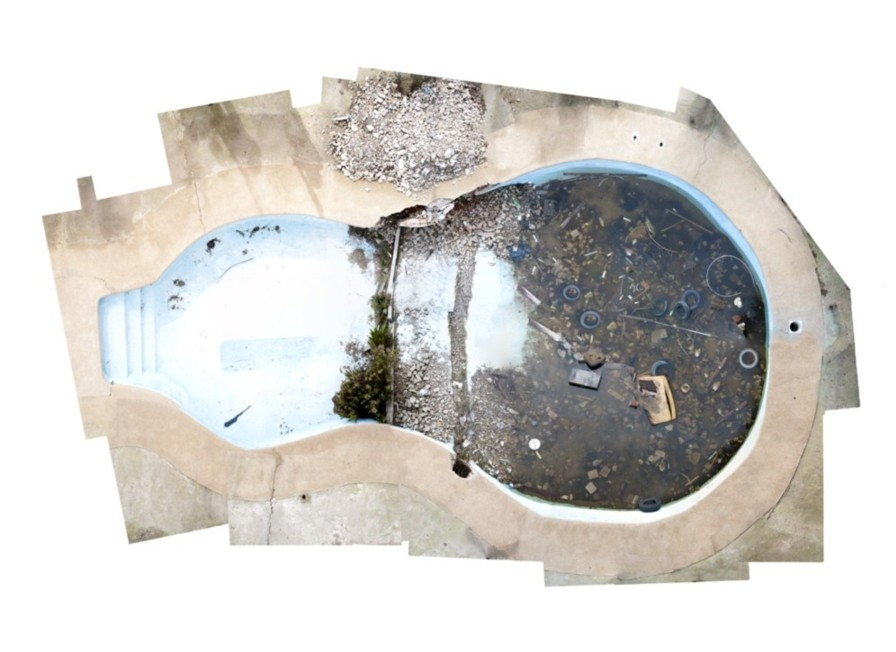
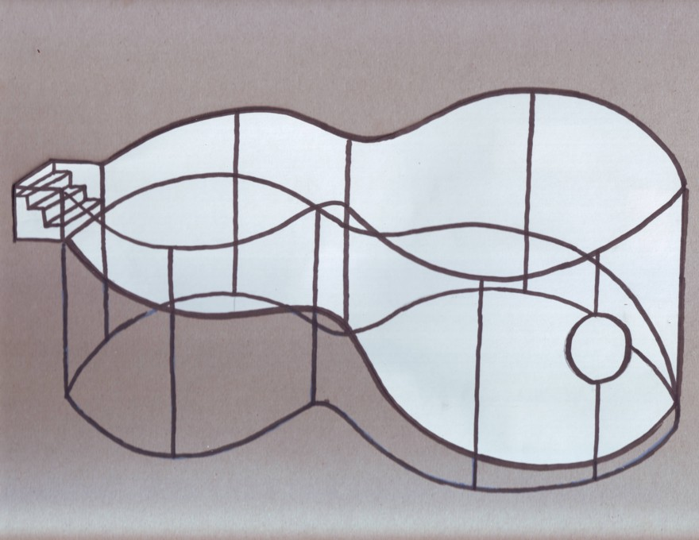
Nº1 — Estación Mapocho, Santiago
El volumen fue cubierto con páginas de cuadernos de líneas.
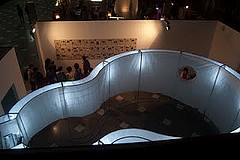
Nº2 — Antiguo Estadio Municipal, Concón
La cubierta de la estructura fue realizada con sacos de harina cocidos.
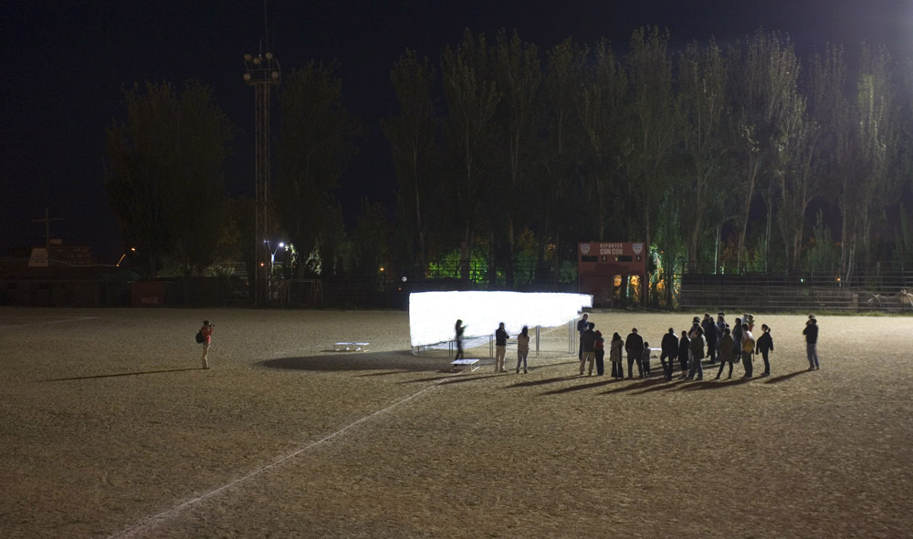
Nº3 — Casa incendiada, Cerro Panteón, Valparaíso
Instalación realizada en una casona recientemente incendiada, identificando las posibilidades de la ruina como espacio de resiliencia. Construí una réplica a escala 1:2 con estructuras de acero, instalándola sobre plataformas hechas con materiales rescatados de la casa quemada, sobre el balcón de una terraza asomada al vacío del cerro. La cubrí con cordel de pita blanca, buscando transparencia acorde al viento constante del lugar.
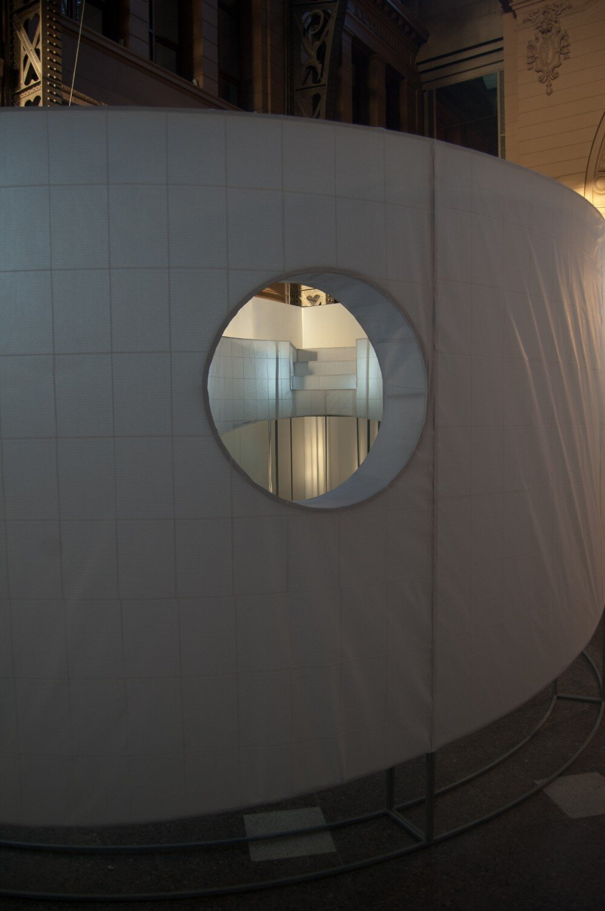
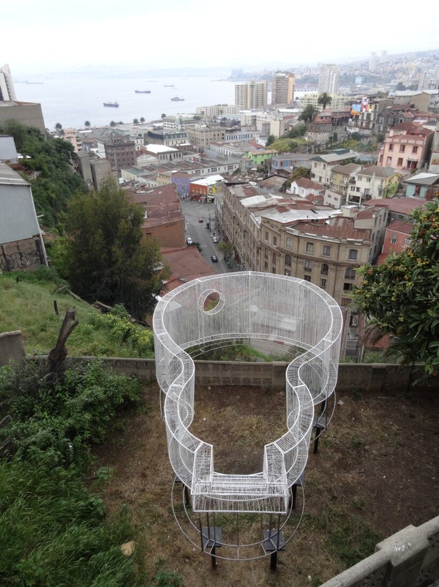
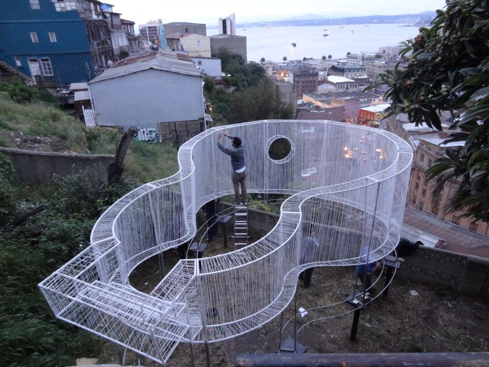
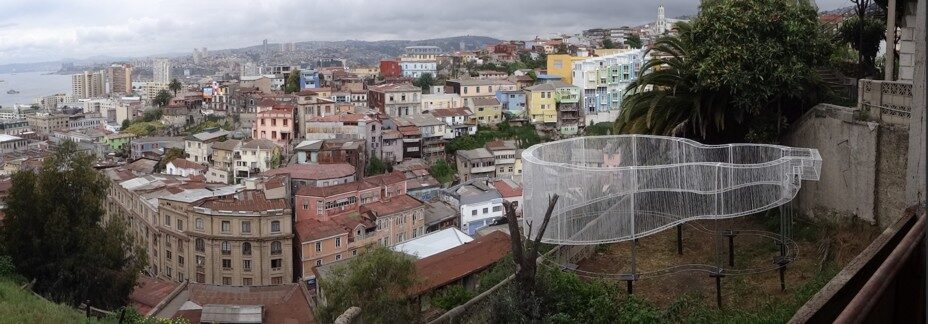
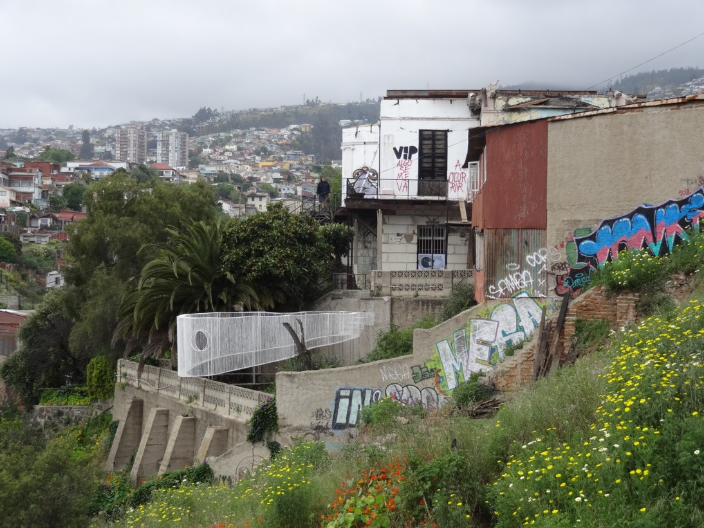
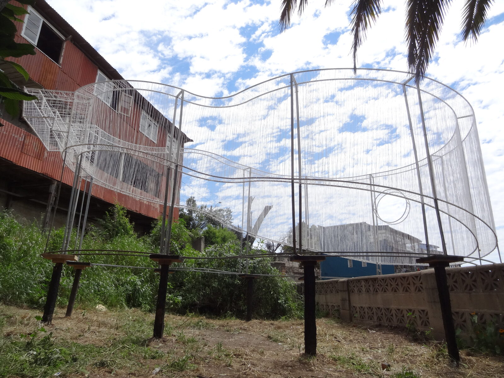
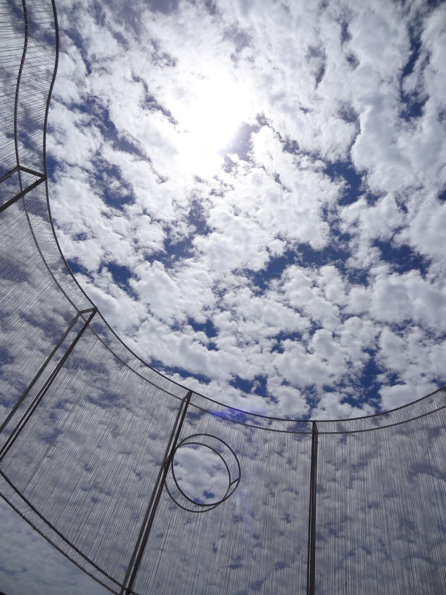
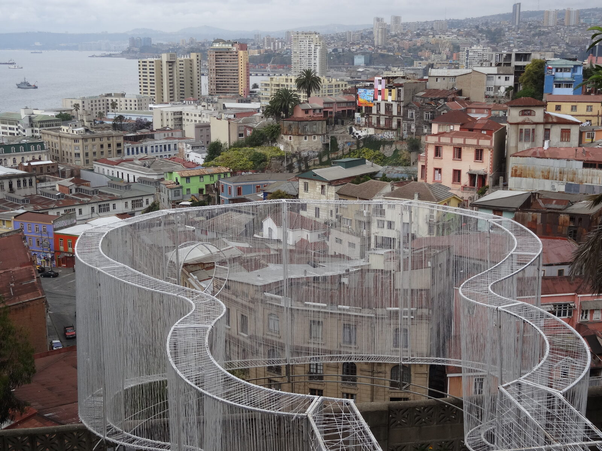
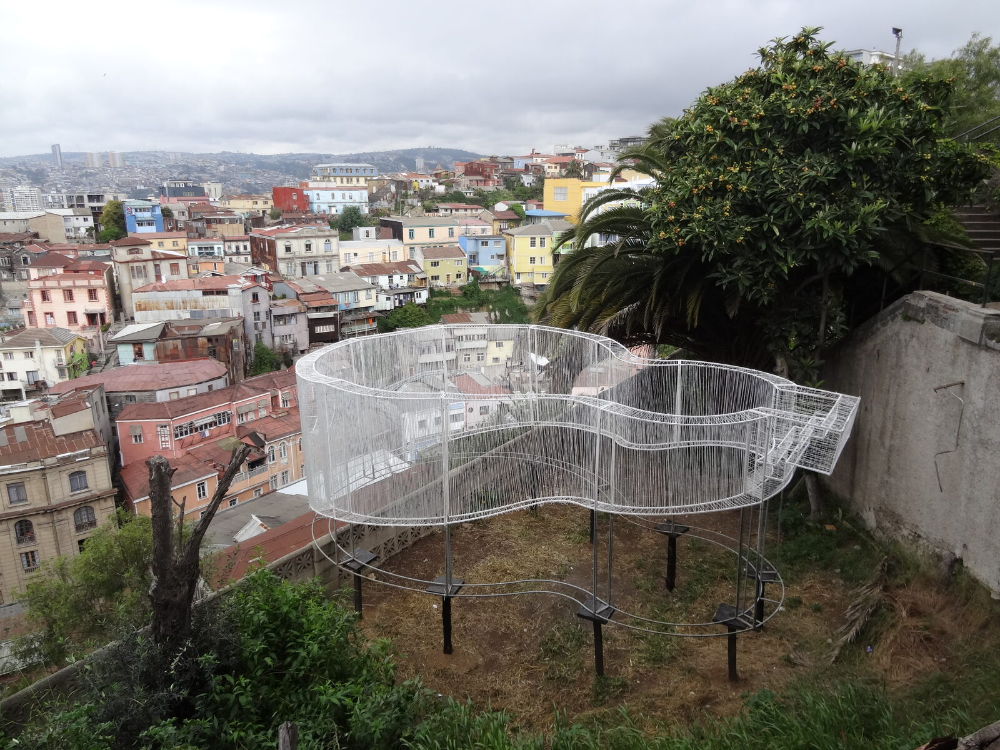
33°03′S · 71°38′O